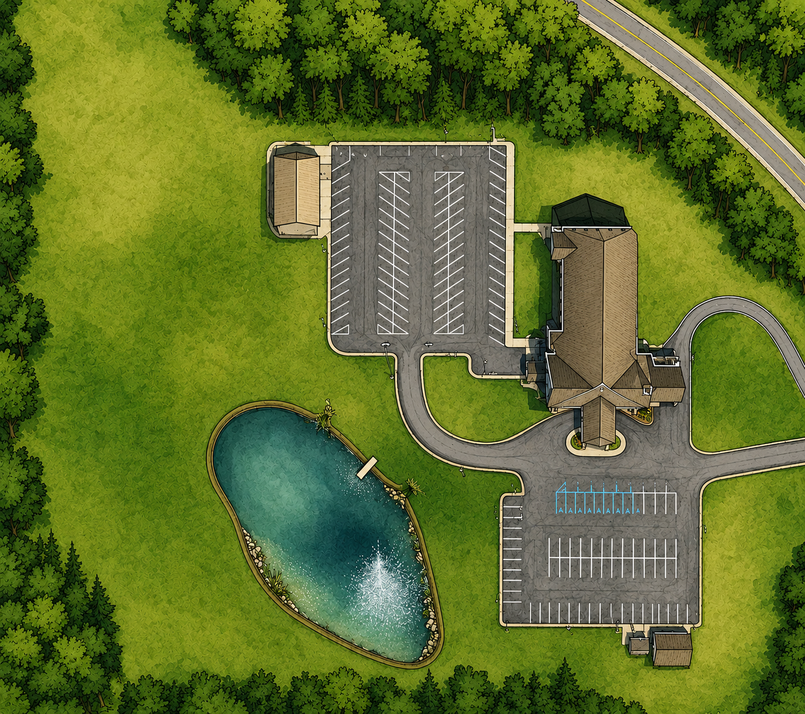

🗺️
Map image not found.
Put your image at public/grounds-map.png
locations.js. Commit & push. Changes can't auto-save — this site is static.locations.jsSelect all, copy, and replace the entire contents of your locations.js file. Then commit & push to GitHub.